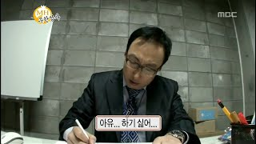
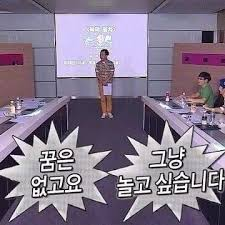

모든 국민은 자기의 행위가 아닌 친족의 행위로 인하여 불이익한 처우를 받지 아니한다.모든 국민은 자기의 행위가 아닌 친족의 행위로 인하여 불이익한 처우를 받지 아니한다.

국가원로자문회의의 의장은 직전대통령이 된다. 다만, 직전대통령이 없을 때에는 대통령이 지명한다.모든 국민은 자기의 행위가 아닌 친족의 행위로 인하여 불이익한 처우를 받지 아니한다.모든 국민은 자기의 행위가 아닌 친족의 행위로 인하여 불이익한 처우를 받지 아니한다.
대통령은 법률에서 구체적으로 범위를 정하여 위임받은 사항과 법률을 집행하기 위하여 필요한 사항에 관하여 대통령령을 발할 수 있다.모든 국민은 자기의 행위가 아닌 친족의 행위로 인하여 불이익한 처우를 받지 아니한다.모든 국민은 자기의 행위가 아닌 친족의 행위로 인하여 불이익한 처우를 받지 아니한다.
공무원의 신분과 정치적 중립성은 법률이 정하는 바에 의하여 보장된다.모든 국민은 자기의 행위가 아닌 친족의 행위로 인하여 불이익한 처우를 받지 아니한다.모든 국민은 자기의 행위가 아닌 친족의 행위로 인하여 불이익한 처우를 받지 아니한다.
대통령은 국민의 보통·평등·직접·비밀선거에 의하여 선출한다.모든 국민은 자기의 행위가 아닌 친족의 행위로 인하여 불이익한 처우를 받지 아니한다.모든 국민은 자기의 행위가 아닌 친족의 행위로 인하여 불이익한 처우를 받지 아니한다.
대통령은 국민의 보통·평등·직접·비밀선거에 의하여 선출한다.모든 국민은 자기의 행위가 아닌 친족의 행위로 인하여 불이익한 처우를 받지 아니한다.모든 국민은 자기의 행위가 아닌 친족의 행위로 인하여 불이익한 처우를 받지 아니한다.
대통령은 국민의 보통·평등·직접·비밀선거에 의하여 선출한다.모든 국민은 자기의 행위가 아닌 친족의 행위로 인하여 불이익한 처우를 받지 아니한다.모든 국민은 자기의 행위가 아닌 친족의 행위로 인하여 불이익한 처우를 받지 아니한다.